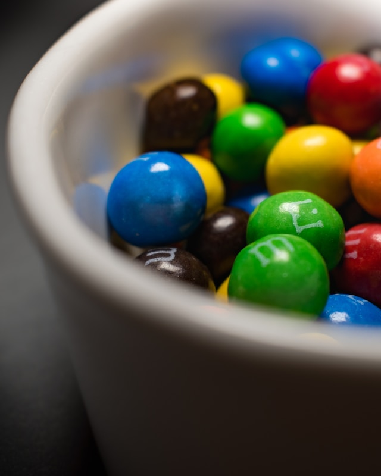

갈색의 초콜릿 대신
화려한 설탕코팅을 입히다

M&M's는 겉의 설탕코팅의 색을 알록달록하게
바꾸고 색마다 맛을 다르게 함으로써,
M&M's 초콜릿을 먹는 소비자에게
원하는 색을 골라 먹도록 하는
재밌는 경험을 제공한다.
M&M's의 캐릭터
색별로 6개의 개성있는 초콜릿 캐릭터를 만들어 활용하고 있다.
레드는 자신감 있는 모습,
오렌지는 보호하는 감정이 드는 두려움,
옐로는 순수하고 따뜻한,
그린은 친근감과 평안함,
블루는 자신감 넘치는 모습,
브라운은 지적이고 초콜릿에 가까운 색으로
오리지널의 의미를 가진다.